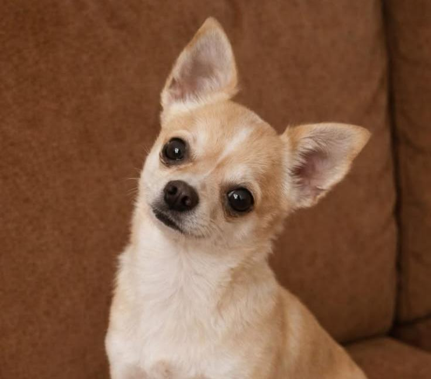
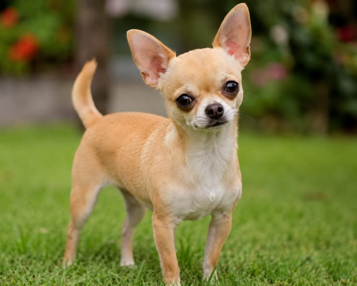
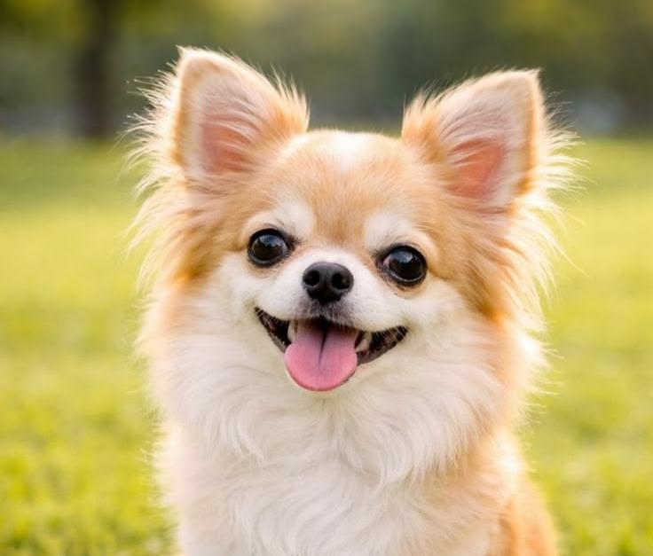
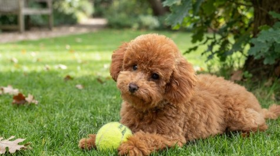
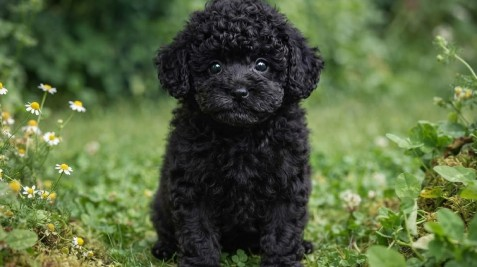
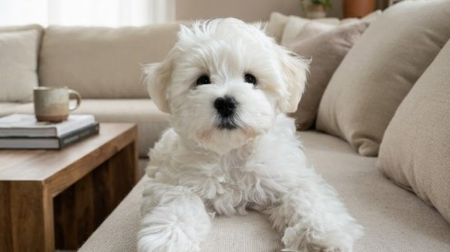

Chihuahua
Il Chihuahua è la razza canina più piccola al mondo, ma possiede una personalità gigante. Originario del Messico, è un concentrato di vivacità, intelligenza e coraggio.
Nonostante le dimensioni tascabili, ha un cuore forte, sveglio e incredibilmente affettuoso, capace di stringere un legame quasi simbiotico con il proprio padrone e di adattarsi perfettamente a qualsiasi ambiente domestico.
Caratteristiche
Tempo e Routine

Ha bisogno di passeggiate quotidiane e stimoli mentali adeguati.
Cura e Impegno
Pelo facile da gestire, ma richiede attenzione al freddo e alla salute dentale.
Valutazione dello spazio
Perfetto per qualsiasi tipo di casa o appartamento in città.
Maggiori informazioni
Tempo e Routine
Non richiede grandi distanze o esercizio fisico estenuante, ma necessita comunque di brevi passeggiate quotidiane per esplorare, socializzare ed evitare noia e ansia. Ha una personalità vivace e apprezza molto le attività di gioco in casa.
Cura e Impegno
Sia nella varietà a pelo corto che in quella a pelo lungo, il mantello non richiede cure complesse oltre a spazzolate periodiche. È fondamentale proteggerlo dal freddo in inverno (con cappottini) e curare l'igiene orale fin da cucciolo.
Valutazione dello spazio
È il cane da appartamento per eccellenza: le sue ridottissime dimensioni lo rendono perfetto per spazi piccoli o monolocali. Ciò che conta per il Chihuahua non sono i metri quadri, ma la vicinanza continua alle persone che ama.
Pro e Contro
✓ Per chi è ideale
- Taglia tascabile, facile da trasportare
- Cane da compagnia fedele, affettuoso e non impegnativo
- Vita media molto longeva e grande adattabilità
▲ Cosa tenere a mente
- Struttura ossea delicata che richiede attenzione
- Molto sensibile al freddo e alle basse temperature
- Può diventare troppo protettivo e abbaiare verso gli sconosciuti
Momenti ed espressioni



Palette di colori


